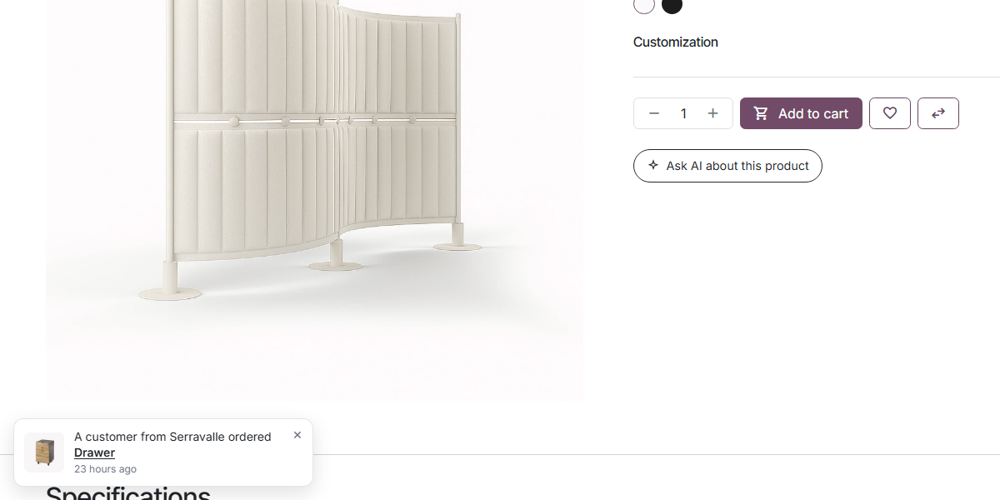
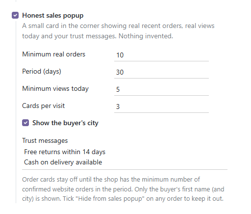

A small card appears in the bottom-left corner of your shop, a few times per visit. It shows one of three things, and every one of them is true:
There is no option to invent orders or inflate numbers, on purpose. Fake "someone just bought" popups break consumer protection rules in many countries and lose shoppers' trust once they notice.
In Website > Configuration > Settings, in the eCommerce section:
Tick Hide from sales popup on any sales order (for example a test order) to keep it out.
